Fundamentos da Termodinâmica — Aula 1 (Unidade 1)
Capa — Fundamentos da Termodinâmica (Aula 1, Unidade 1)
0:00 · 10s · 5 ações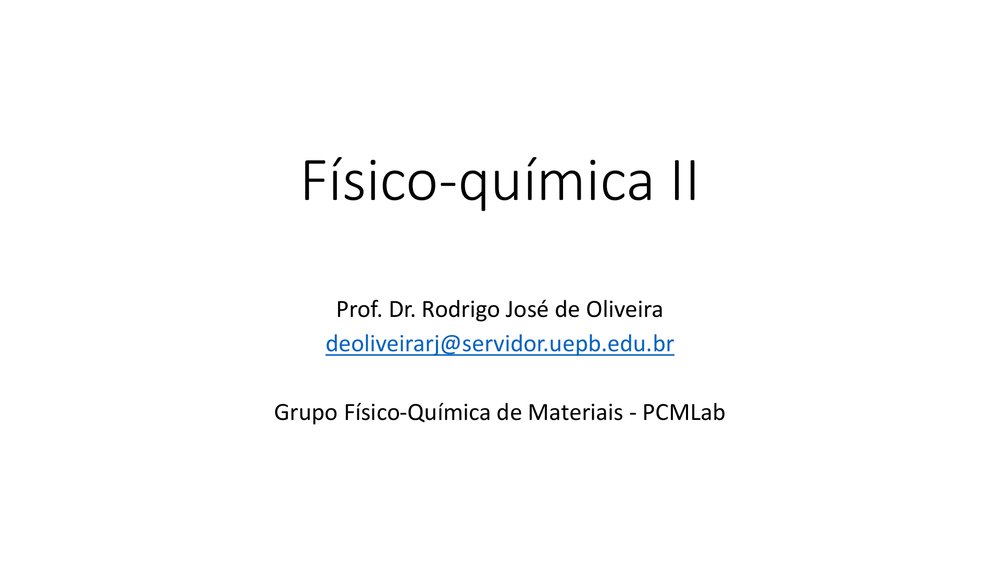
Olhe para este cristal.
Ele é um sólido organizado, rígido, brilhante.
Agora olhe este, líquido, fluido, sem forma própria.
Abertura — polímeros de coordenação (CPs)
0:10 · 206s · 53 ações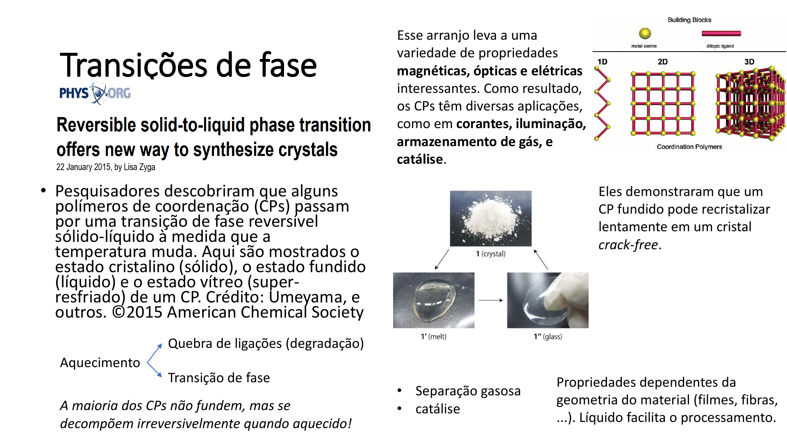
São o mesmo material pesquisadores descobriram que alguns polímeros de coordenação passam
por uma transição de fase reversível entre sólido e líquido, só com a mudança de temperatura.
No aquecimento, o caminho é este, sólido cristalino, líquido fundido, e por fim vítreo, super-resfriado.
Durante a fusão, ligações são quebradas e refeitas.
E aqui está o detalhe surpreendente.
A maioria desses polímeros não funde.
Aquecidos, ele simplesmente se decompõe, de modo irreversível.
A estrutura morre antes de fluir.
Os que fundem valem ouro.
Esses materiais servem como corantes, em iluminação, em armazenamento de gás e em catálise.
As propriedades dependem da geometria do material, filmes, fibras, monólitos.
E o estado líquido facilita justamente o processamento nessas formas.
Melhor ainda, o fundido pode recristalizar devagar, formando um cristal sem trincas.
Então fica a pergunta que guia esta aula.
Por que um material funde e outro decompõe?
O que decide?
Esta mora num único lugar, a forma como a energia flui.
Bem-vindo à Físico Química II.
Antes de qualquer equação, três palavras.
Sistema, calor e trabalho.
O sistema é a porção do universo que escolhemos estudar.
Uma xícara de café.
Um gás num cilindro.
Tudo mais é vizinhança.
A energia atravessa a fronteira de duas maneiras, e a diferença entre elas é o padrão do movimento.
Calor é a energia transferida pelo movimento desordenado das moléculas da vizinhança.
Quando o café esfria, as moléculas do ar bate em bate desorganizadas nas moléculas do café,
e a energia passa de mão em mão, sem direção preferencial.
Trabalho é energia transferida pelo movimento ordenado.
O gás em puro estão num único sentido, macroscópico, organizado.
A vizinhança sobe um peso, gira um eixo.
Tudo coordenado.
Desordenado, calor ordenado, trabalho.
Guarde a suposição, ela volta sempre.
Agora, a fronteira importa.
Uma parede a diabática bloqueia a passagem de calor.
Um sistema isolado não troca calor, nem trabalho, nem matéria com a vizinhança.
Nele, todo processo interno é adiabático.
Um detalhe de convenção, adotado no A15 neste curso.
Do ponto de vista do sistema, calor que entra é positivo.
Trabalho feito sobre o sistema é positivo.
Um gás que expande faz trabalho contra a vizinhança, então o trabalho dele é negativo.
E tudo, absolutamente tudo, é medido tendo o sistema como referencial.
Quando eu disser que o sistema ganhou energia, você já sabe, algo atravessou a fronteira para dentro.
PAUSE E PENSE Pausa rápida, antes de seguir.
Você consegue dar um exemplo de transferência por movimento ordenado no seu dia a dia?
PAUSE E PENSE Pense nisso por 10 segundos.
Um freio de carro, um êmbolo de seringa, uma massa que sobe.
Todo movimento organizado que entrega energia é trabalho.
Com o vocabulário pronto, a primeira pergunta grande.
Vocabulário — sistema, vizinhança e os dois trânsitos de energia
3:37 · 25s · 9 ações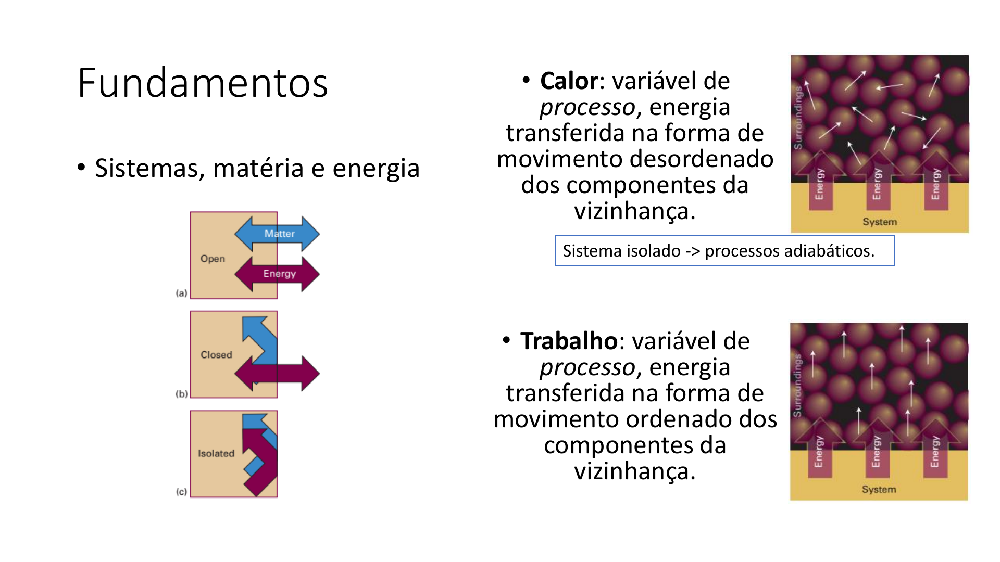
Para onde vai a energia que entra?
Imagine uma montanha.
O topo está a 1200 metros.
A base, a 200.
Não importa se você sobe pela trilha direta ou por uns zig-zag longo, a diferença de altitude é sempre mil metros.
Altitude é uma função de estado.
Depende só de onde você está, não do caminho que percorreu.
Convenção de sinais — a contabilidade tem regras
4:02 · 63s · 18 ações
A energia interna, U, é a função de estado da termodinâmica.
É a soma de todas as energias das partículas do sistema, translação, rotação, vibração, interações.
Não conseguimos medir o valor absoluto, mas isso não importa.
O que usamos é a variação, delta U.
E aqui vem a armadilha clássica.
O que é a função de estado, o calor ou a energia interna?
Muita gente diz, o sistema contém calor.
Errado.
O sistema contém energia.
Calor é o nome da transferência enquanto ela acontece.
Quando o calor para de fluir, o nome some.
Perguntar quanto de calor tem neste copo de água é como perguntar quanto de depósito tem nesta conta.
O que existe é saldo, depósito é o movimento.
Calor e trabalho não são funções de estado.
São trânsito.
Por isso a termodinâmica escreve que W minúsculos e o maiúsculo.
Primeira Lei — energia interna U, o estoque do sistema
5:05 · 63s · 19 ações
Como então guardar a conta?
A primeira lei da termodinâmica.
A energia interna de um sistema isolado é constante.
Se nada entre nada sai, o saldo não muda.
Num sistema isolado, calor zero, trabalho zero e, portanto, delta U igual a zero.
Para um sistema que troca energia, o saldo se escreve assim.
A variação da energia interna é o calor mais o trabalho.
Delta U igual a que mais W.
Com a convenção que já vimos, calor que entra a soma, trabalho feito sobre o sistema soma.
Observe o que essa equação diz de verdade.
Energia não é criada nem destruída, só transferida e transformada.
E o delta ou do lado esquerdo, função de estado,
pode ser calculado por qualquer caminho que ligue o mesmo estado inicial ao mesmo final.
Que W variam com o caminho?
A soma, não.
Guarde essa imagem, dois caminhos, uma altitude.
Ela é o coração de tudo o que vem.
Primeira Lei — a equação da contabilidade (ΔU = q + w)
6:08 · 71s · 25 ações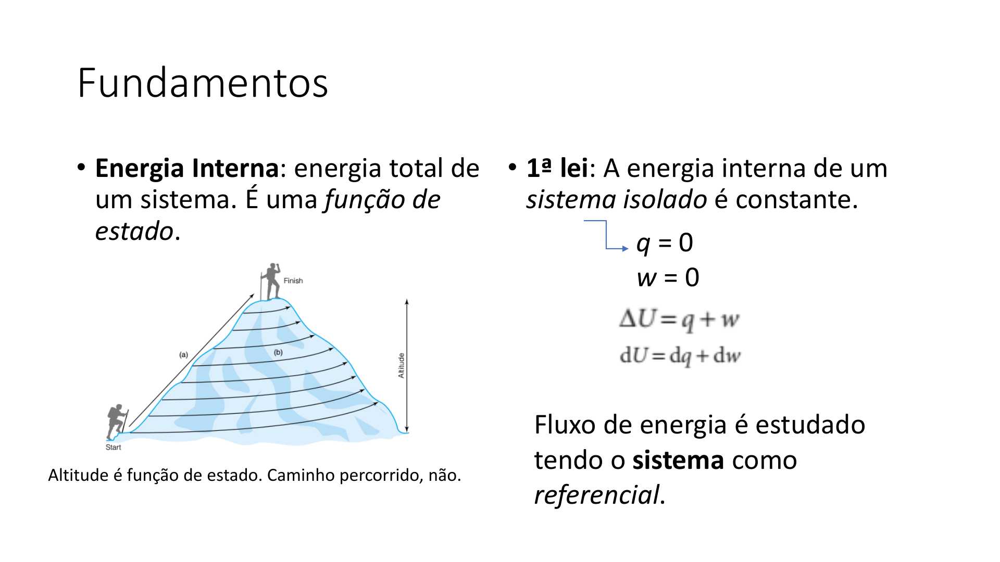
Vamos fazer o sistema trabalhar.
Literalmente.
Um gás confinado num cilindro, com um pistão em cima.
O gás expande, empurra o pistão.
Quanto trabalho ele realiza?
Depende.
Contra o que ele empurra?
Três cenários clássicos.
Primeiro, expansão livre.
O pistão não encontra nada.
Do outro lado, vácuo.
Nada resiste ao movimento.
A pressão externa é zero e, portanto, o trabalho é zero.
Repare, houve movimento, houve expansão, mas nenhum peso subiu, nenhum eixo girou.
Trabalho zero.
Expansão livre é de graça, energeticamente falando.
Segundo, expansão contra pressão constante.
Sobre o pistão, um peso fixo.
O gás empurra contra uma pressão externa que não muda.
O trabalho fica simples, menos P externo vezes delta V.
Se o gás expande, delta V positivo, trabalho negativo, coerente com a convenção,
o sistema fez trabalho, entregou energia.
Trabalho de expansão — três cenários, três respostas
7:19 · 149s · 36 ações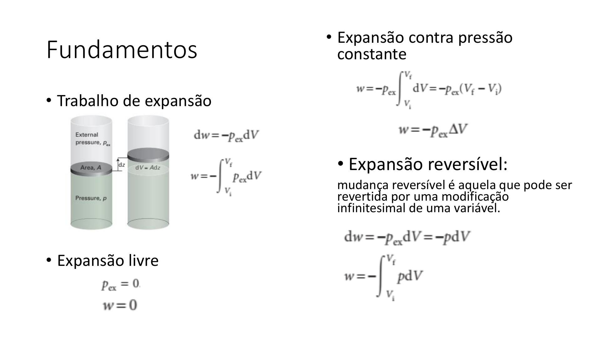
Terceiro, o mais sutil, expansão reversível.
Aqui a pressão externa é ajustada para diferir da pressão do gás por uma quantidade infinitesimal, a cada instante.
A definição formal, uma mudança reversível é aquela que pode ser revertida por uma modificação infinitesimal de uma única variável.
Na prática, imagine a pressão externa como uma pilha de grãos de areia sobre o pistão.
Remova um grão, o gás expande um pouquinho.
Remova outro, expande de novo.
A cada passo, o gás está sempre a um grão de distância de inverter o processo.
Um grão de volta, e ele comprime.
Esse detalhe infinitesimal não é preciosismo.
É o cenário que produz o máximo de trabalho possível, e é o único que conseguimos tratar com exatidão usando equações.
A próxima conta mostra por quê.
Gás perfeito, temperatura constante.
Expansão reversível do volume V1 até o volume V2.
A cada instante, a pressão externa igual a pressão do gás, P igual a nRT sobre V.
O trabalho é integral de menos PDV ao longo do caminho.
O resultado é uma das fórmulas mais úteis do curso, menos nRT, vezes o logaritmo natural de V2 sobre V1.
A área sobre a curva da isoterma é, em módulo, esse trabalho.
Agora percebo o significado da reversibilidade.
Na expansão reversível, o gás empurra contra a maior pressão possível a cada instante.
Nem outra expansão, entre os mesmos volumes, extrai mais trabalho.
Livre dá zero.
Pressão constante dá pouco.
Reversível dá o máximo.
Mas atenção, temperatura constante, gás perfeito.
A energia interna de um gás perfeito depende só da temperatura.
Se T não muda, o não muda.
E pela primeira lei, delta igual a que mais W, se delta U é zero, o calor que entra exatamente compensa o trabalho que sai.
O gás converte calor em trabalho, sem alterar seu estoque.
Agora, o outro lado da moeda.
Suponha que eu queira esquentar o sistema.
Quanto calor é preciso para subir a temperatura?
A volume constante, sem trabalho de expansão, todo calor vai para dentro da energia interna.
Calor a volume constante é igual a delta U.
Expansão reversível — a pilha de areia e o caminho do máximo
9:48 · 34s · 8 ações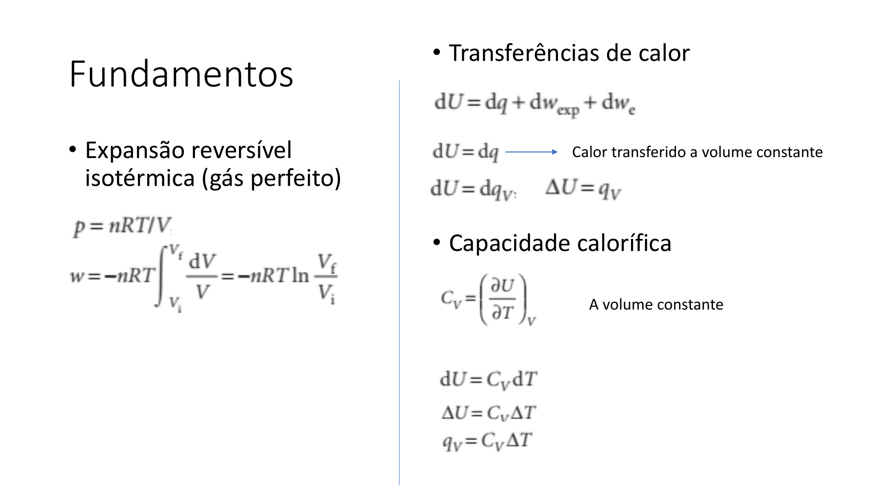
Definimos então a capacidade calorífica volume constante, Cv, a derivada parcial da energia interna em relação à temperatura, a V fixo.
Quanto maior Cv, mais calor o sistema pede para aquecer um grau.
Duas medidas da mesma fome de energia, o trabalho máximo na expansão e o calor necessário no aquecimento.
A próxima sessão junta as duas.
Na bancada, ninguém entrava volume.
Béqueres, reatores, células fotossabertas, tudo opera sob a pressão atmosférica, constante.
Calor e capacidade — quanto calor para subir a temperatura?
10:22 · 29s · 8 ações
A pergunta prática é sempre a mesma quanto o calor um processo troca a pressão constante.
Só que a pressão constante deixa o volume livre.
O sistema expande, faz trabalho, e o calor medido não é mais delta U, precisamos de uma função que contabiliza os dois efeitos juntos.
A solução é elegante.
Defina a entalpia, H, como a energia interna mais o produto pressão vezes volume.
H igual ao mais PV.
Entalpia — a moeda corrente da pressão constante (H = U + pV)
10:51 · 93s · 21 ações
Três observações, em ordem de importância.
Primeira, U, P e V são funções de estado.
Soma e produto de funções de estado são funções de estado.
Portanto, H é função de estado.
É o estoque certo para processos a pressão constante.
Segunda, o ganho prático.
Para um processo a pressão constante, sem trabalho não expansivo, a variação de entalpia é igual ao calor trocado.
delta H igual a q p e o calor deixa de ser caminho dependente na prática, porque a entalpia o absorve dentro de uma função de estado.
Terceira, para o gás perfeito, e PV dependem só da temperatura.
Logo H também.
E as capacidades caloríficas se ligam, Cp menos Cv igual a nR.
Uma linha de tabela resolve as duas.
Vale a analogia final.
Se U é o saldo da conta, H é o saldo mais o crédito rotativo disponível, o valor que o sistema pode mover só expandindo contra a pressão do ambiente.
A entalpia, e não a energia interna, é a moeda corrente da termoquímica e a base de toda tabela de calor de reação que você vai usar.
PAUSE E PENSE Antes de seguir, o nosso ponto de parada no meio da aula.
PAUSE E PENSE Pause o vídeo e tente responder em uma frase.
Por que a entalpia é função de estado, se o calor não é?
Se você conseguiu dizer por que H soma o com PV, que já eram funções de estado, está pronto para a termoquímica.
Gás perfeito — as duas capacidades se ligam (Cp − Cv = nR)
12:24 · 94s · 24 ações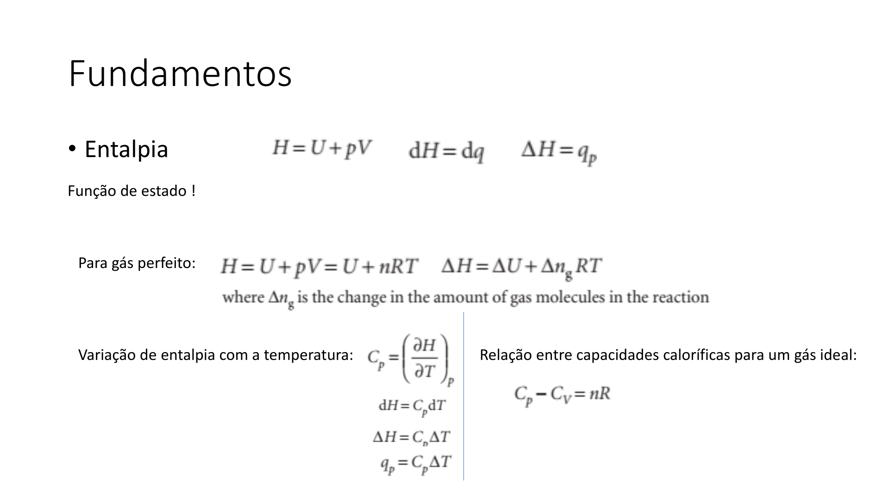
Lembra dos polímeros de coordenação da abertura que fundiam e recristalizavam?
Chegou a hora de dar número a essas mudanças.
Toda mudança física tem entalpia.
Vaporização líquido para H.
Fusão sólido para líquido.
Sublimação sólido direto para H.
Cada seta tem um valor, medido no estado padrão, pressão de um bar e temperatura de referência tabelada.
O sentido importa.
Vaporizar água custa cerca de 40 kJ por mol, a temperatura ambiente.
Energia entra para romper as atrações entre moléculas.
Vaporização endotérmica, ΔH positivo.
O caminho de volta devolve a mesma energia.
Condensar vapor libera 40 kJ por mol.
Exotérmica, ΔH negativo.
Mesmo módulo, sinais opostos, porque H é função de estado, o caminho reverso só troca a ordem dos estados.
Essa simetria vale para todo par, fusão e solidificação, sublimação e deposição.
Se você conhece o valor de um sentido, conhece o outro.
E uma nota de vocabulário, que evita erro de prova.
Endotérmico não significa esfria tudo em volta, significa que o processo pede energia da vizinhança.
Exotérmico devolve.
O gelo derretendo na sua mão é endotérmico, e sua mão sabe disso.
Mudança física, entalpia.
Termoquímica — toda mudança física tem entalpia
13:58 · 18s · 6 ações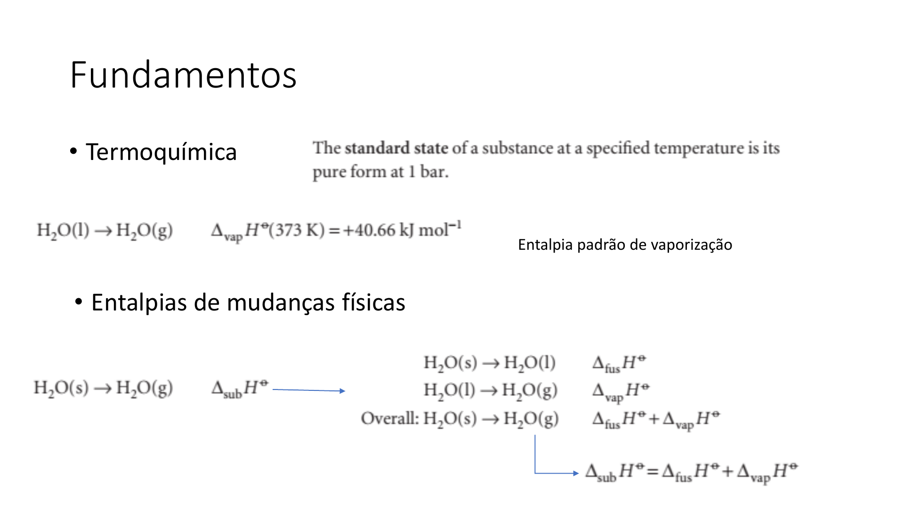
Mudança química, também.
Quebrar e formar ligações reorganiza a energia das mesmas moléculas e moléculas novas.
A entalpia de reação, ΔRH, soma tudo isso.
Duas classes especiais dominam as tabelas, por pura economia de dados.
Reações — formação e combustão, as duas entalpias especiais
14:16 · 85s · 21 ações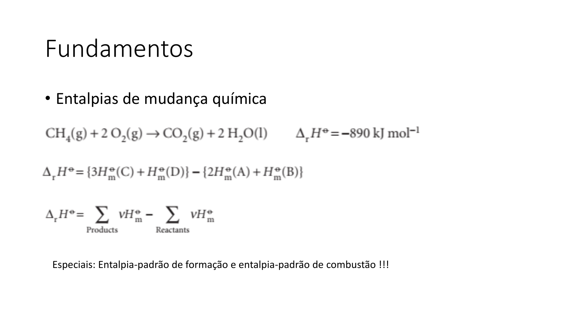
A primeira, entalpia padrão de formação.
É a entalpia da reação que forma um mol do composto a partir dos elementos, cada um no seu estado padrão.
Para a água líquida, hidrogênio gás mais meio oxigênio gás, formando água líquida.
Todo elemento puro, no estado padrão, tem entalpia de formação igual a zero.
Por definição, é o ponto zero da régua.
A segunda, entalpia padrão de combustão.
Reação do composto com oxigênio, formando os produtos completos de queima.
Um dado de laboratório fácil de medir com calorímetro e muitos valores de formação nascem na verdade de combustões.
Por que essas duas bastam?
Por que qualquer reação pode ser montada como combinação desses blocos padrão?
A próxima ideia formaliza exatamente isso.
Em 1840, Germain Hess publicou a observação que organiza toda a termoquímica.
A entalpia total de uma reação é a mesma, não importa em quantas etapas ela acontece.
Isso não é uma lei nova.
É a função de estado funcionando.
Se H depende só dos estados, então a diferença entre reagentes e produtos é fixa
e qualquer rota que liga os mesmos pontos dá a mesma soma.
Volte à montanha, qualquer trilha do acampamento ao acampamento B muda a altitude em mil metros.
Lei de Hess (1840) — a função de estado vira contabilidade de caminhos
15:41 · 62s · 15 ações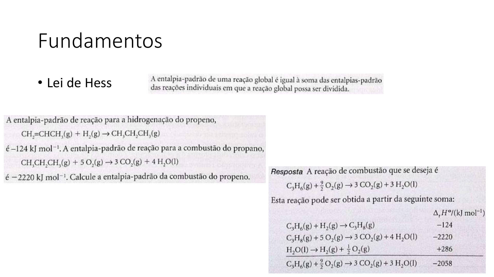
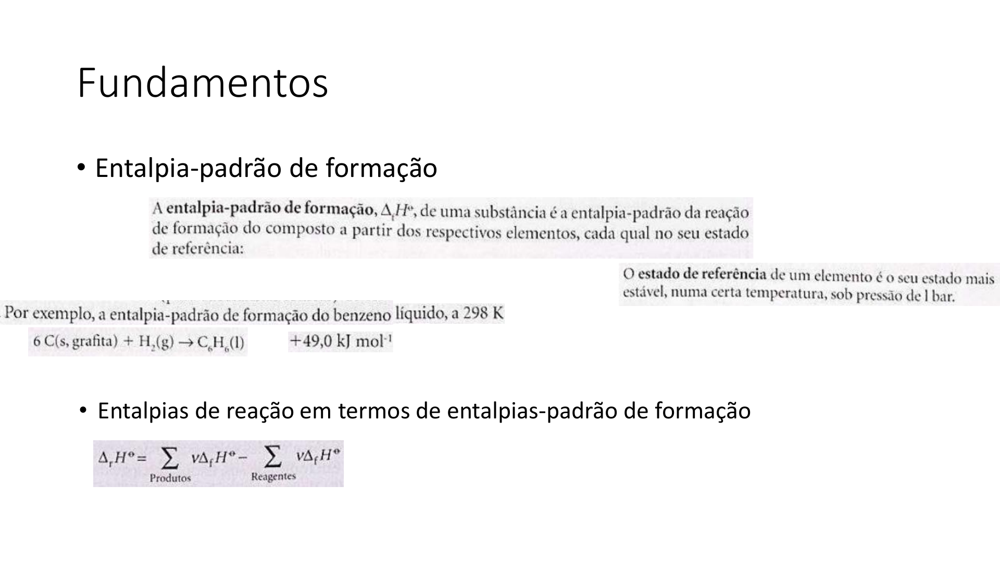
Termoquimicamente, decompõe a reação em qualquer escada de etapas,
some as entalpias e você tem a entalpia global.
O uso mais elegante é a rota padrão.
Todo composto pode ser desmontado nos elementos e cada elemento remontado nos produtos.
Como as entalpias de formação medem exatamente essas escadas,
a entalpia de qualquer reação é a soma das formações dos produtos,
menos a soma das formações dos reagentes, cada uma multiplicada pelo seu coeficiente estequiométrico.
É assim que o gráfico da sua apostila resolve a entalpia de reações que nunca ninguém mediu diretamente.
Você não precisa queimar o composto novo, mede a formação de cada peça, aplica is, pronto.
Note o ganho prático e também o conceitual.
A termoquímica vira contabilidade de estados, livros razão de formações, somados com sinais.
Nenhuma reação precisa ser executada para ter sua entalpia conhecida desde que as peças estejam tabeladas.
Kirchhoff — tabelas a 298 K, reações a qualquer T
16:43 · 83s · 17 ações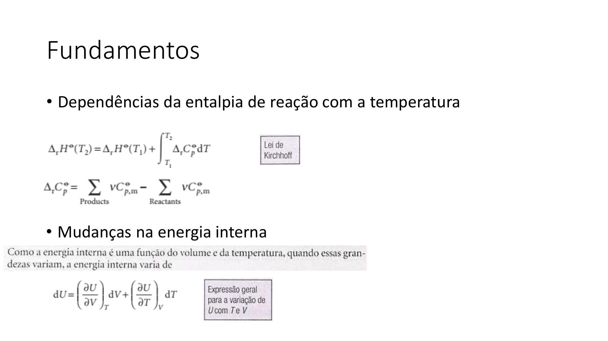
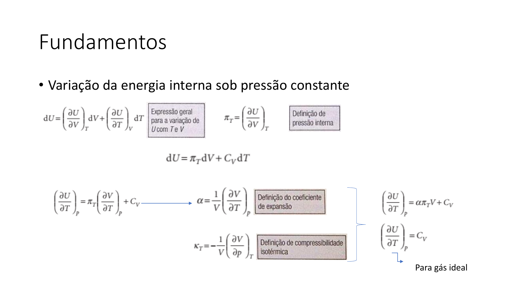
Tabelas nascem a 298 Kelvin.
Motores, fornos e células de combustível operam um monte disso.
Como extrapolamos?
A entalpia de reação a uma temperatura é a entalpia a outra, mais a diferença de aquecimento entre reagentes e produtos.
Aquecer reagentes custa a soma das capacidades deles, aquecer produtos, a dos produtos.
O que sobra delta Cp?
A soma dos Cp dos produtos menos a dos reagentes, ponderada pelos coeficientes.
A relação de Kirchhoff formaliza, a entalpia de reação na temperatura 2 é a entalpia na temperatura 1, mais a integral de delta Cp na faixa.
Se as capacidades forem quase constantes, a integral vira um produto simples, delta Cp vezes a variação de temperatura.
O impacto é duplo.
Primeiro, com Kirchhoff uma única tabela cobre qualquer temperatura de projeto.
Segundo, o mesmo raciocínio com capacidade a volume constante entrega variação da energia interna de reação.
As mudanças de o Seguem Cv, as de H Seguem Cp, o mesmo motor, duas marchas.
A primeira lei está completa, balanços de energia, funções de estado e contabilidade de calor falta pergunta que ela não responde.
Para onde o mundo caminha?
Segunda Lei — a bússola que a contabilidade não tem
18:06 · 82s · 24 ações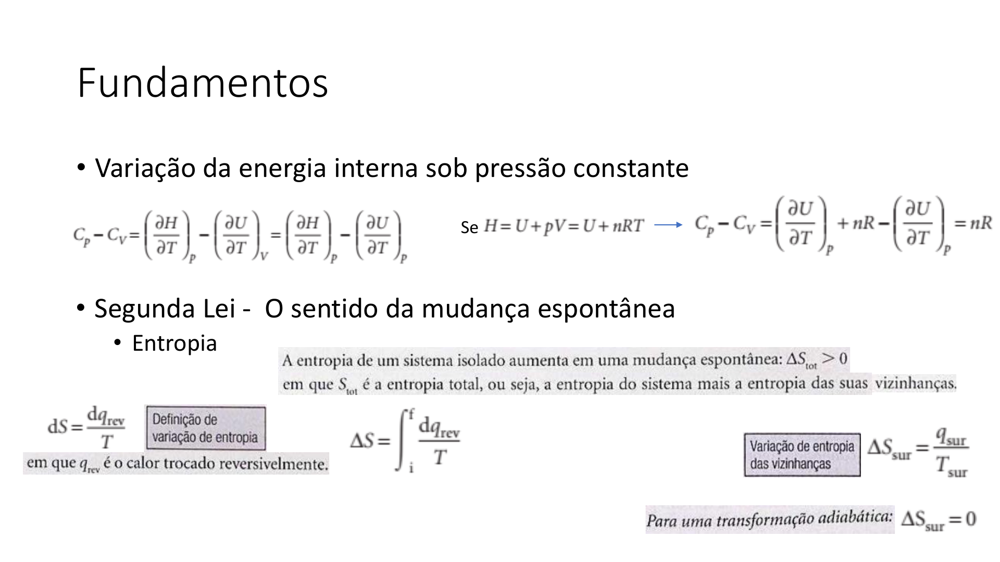
É a segunda lei.
Antes de virar a página, uma conta que faltava.
Para reações com gases a pressão constante, a variação da energia interna sai da entalpia menos o termo de expansão, delta igual a delta H, menos delta n de gás, vezes RT.
Para o gás perfeito, é assim que U e H de reação se convertem um no outro.
Fechada a conta da energia, olhe para o seu café.
Ele esfria sozinho.
Sempre.
O gelo derrete na mesa, nunca ao contrário.
O creme se espalha inteiro no café e nunca se junta de volta num pingo.
Agora, a pergunta incomoda.
A primeira lei proíbe algum desses processos reversos?
Não.
Se o café esquentasse com o ar esfriando, a energia total continuaria constante.
O balanço fecharia perfeitamente.
A primeira lei é uma contabilidade, não uma bússola.
Ela diz quanto, nunca para onde.
Alguma coisa além da energia decide a direção do mundo.
Essa coisa precisa ser uma função de estado, porque o sentido não pode depender do caminho que a história percorreu.
E precisa medir algo que o café esfriando tem de sobra, e o café aquecendo sozinho não tem.
A segunda lei da termodinâmica nomeia esse critério.
Entropia — Clausius, o teste universal de espontaneidade
19:28 · 119s · 29 ações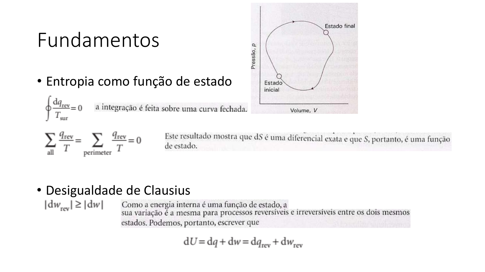
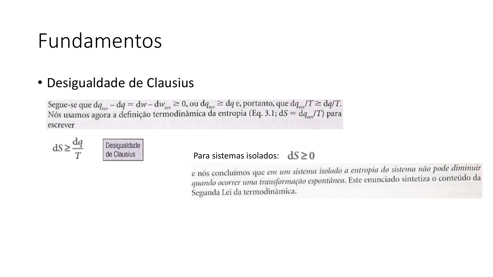
E a grandeza que o mede mudou a física para sempre, a entropia.
O gás está confinado na metade esquerda da caixa.
Removo a divisória.
O que acontece?
Você já sabe, ele se espalha e ocupa tudo.
E aqui vem a armadilha número dois desta aula.
É comum dizer que o gás quer se espalhar, que a entropia é “vontade de bagunça”.
Cuidado com essa tradução apressada.
O que existe a contagem?
Cada partícula bate ao acaso, e para cada arranjo microscópico existem muito mais configurações com o gás espalhado do que com o gás amontoado.
A expansão não é desejo, é estatística.
Nos dizeres de Boltzmann, a entropia conta o logaritmo do número de configurações.
Espalhado tem mais configurações, ponto.
Se você disser entropia é desordem na prova, explique o que está contando, senão, meia resposta.
A termodinâmica clássica define-se sem estatística, como função de estado cuja variação um processo reversível é o calor reversível dividido pela temperatura.
E a desigualdade de Clausius do teste universal, a variação de entropia é maior ou igual ao calor trocado dividido pela temperatura.
Igual, no caso reversível, maior, no espontâneo.
O corolário mais poderoso da aula, para um sistema isolado, que não troca calor nem trabalho, o calor é zero, e a desigualdade vira delta S maior ou igual a zero.
Num sistema isolado, a entropia nunca diminui.
Se ela aumenta, o processo é espontâneo.
Se fica constante, o sistema está em equilíbrio.
É por isso que o café não esquenta sozinho.
O café com o ar é, junto, um sistema isolado.
O café esquentando exigiria entropia total diminuindo, clausos nega no tranco.
A seta do mundo, enfim, tem régua.
Entropia na prática — três receitas e o zero da régua
21:27 · 68s · 16 ações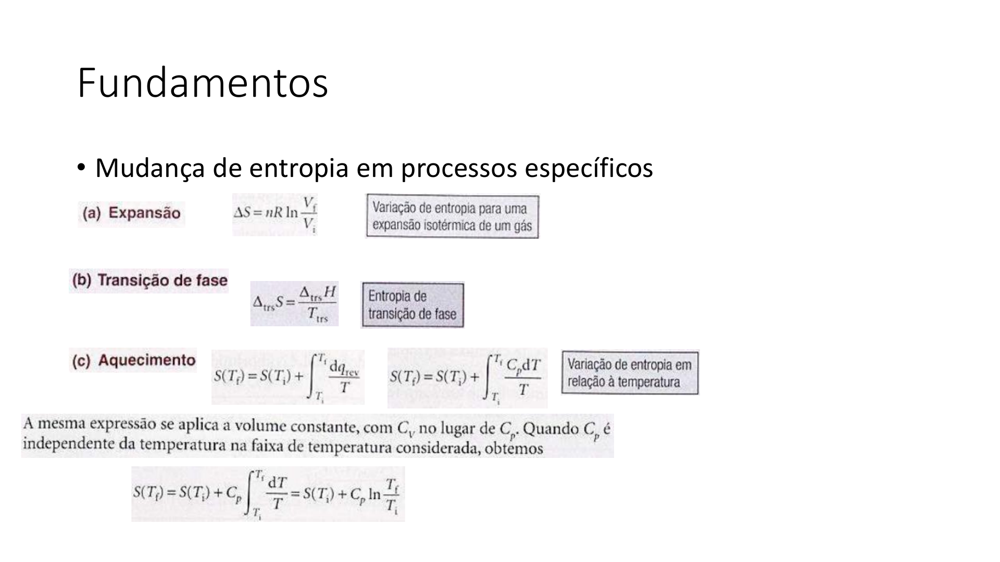
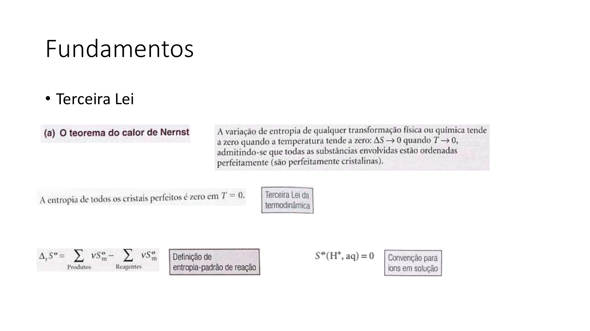
Como usar a entropia na prática?
Três receitas cobrem quase tudo.
Primeira, transição de fase à temperatura constante.
A fusão, a vaporização.
Como T é fixa, a variação de entropia é simplesmente a entalpia de transição dividida pela temperatura de transição.
Fundir gelo a zero grau Celsius, ou seja, 273 kelvin, com quase 7 kJ por mol, delta S vale cerca de 26 J por mol por kelvin.
O degrau do gráfico.
Segunda, aquecimento sem mudança de fase.
A entalpia entrega n C delta T, na entropia, o delta T entra dentro do logaritmo.
n C vezes o logaritmo de T2 sobre T1.
Aquecer amplia a entropia sempre, qualquer ser positivo, qualquer T maior.
Terceira, a expansão isotérmica do gás perfeito lembra do trabalho máximo?
A entropia correspondente a nR vezes o logaritmo do volume final sobre o inicial.
O gás espalhado do clipe anterior, agora com número.
Fechamento — três ideias para levar da aula
22:35 · 46s · 12 ações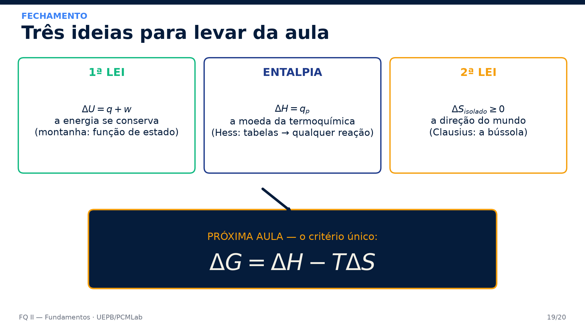
E falta peça final, onde a régua da entropia começa?
A terceira lei responde.
Do zero absoluto, todo cristal puro e perfeito tem entropia igual a zero.
Um único arranjo possível, uma única configuração.
Zero grau de espalhamento.
O impacto é enorme, com o zero fixado, entropias não são mais variações relativas, são valores absolutos.
As tabelas de S a 298 Kelvin, que você vai usar em toda a disciplina,
existem porque a terceira lei desenhou o ponto de partida da curva.
E a curva inteira agora faz sentido, começa no zero, sobe com aquecimento, salta nas transições.
A régua completa do sentido.
Encerramento — capítulos do vídeo e créditos
23:21 · 86s · 23 ações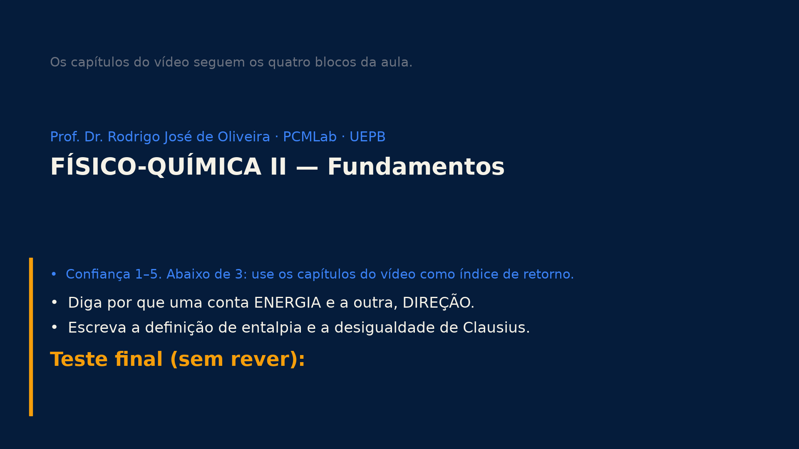
Três ideias para levar da aula de hoje.
Primeira, a energia interna é função de estado.
E a primeira lei, delta igual a que mais W, é a contabilidade.
Na pressão constante, a moeda vira a entalpia, delta H igual ao calor do processo,
e a lei de H transforma tabelas de formação em qualquer reação.
Segunda, espontaneidade não vem da energia, vem da entropia.
Num sistema isolado, delta S nunca é negativo.
Clausius deu a bússola que a primeira lei não tinha.
Terceira, com a terceira lei, a entropia tem zero absoluto.
E as três receitas, transição, aquecimento, expansão, colocam números na bússola.
Agora, olhe para os cartões.
Se você juntar a moeda da termoquímica com a bússola da espontaneidade, o que obtém?
Exatamente o próximo capítulo, a energia de Gibbs, delta G igual a delta H menos T delta S
o critério único que decide, a temperatura e pressão constantes,
se uma reação caminha sozinha.
Antes de encerrar, o teste final.
Sem rever, escreva num papel a equação que define a entalpia e a desigualdade de Clausius
e diga por que uma conta energia e a outra, direção.
Confiança de 1 a 5.
Se ficou abaixo de 3, os capítulos do vídeo são o seu índice de retorno.
Até a próxima aula.